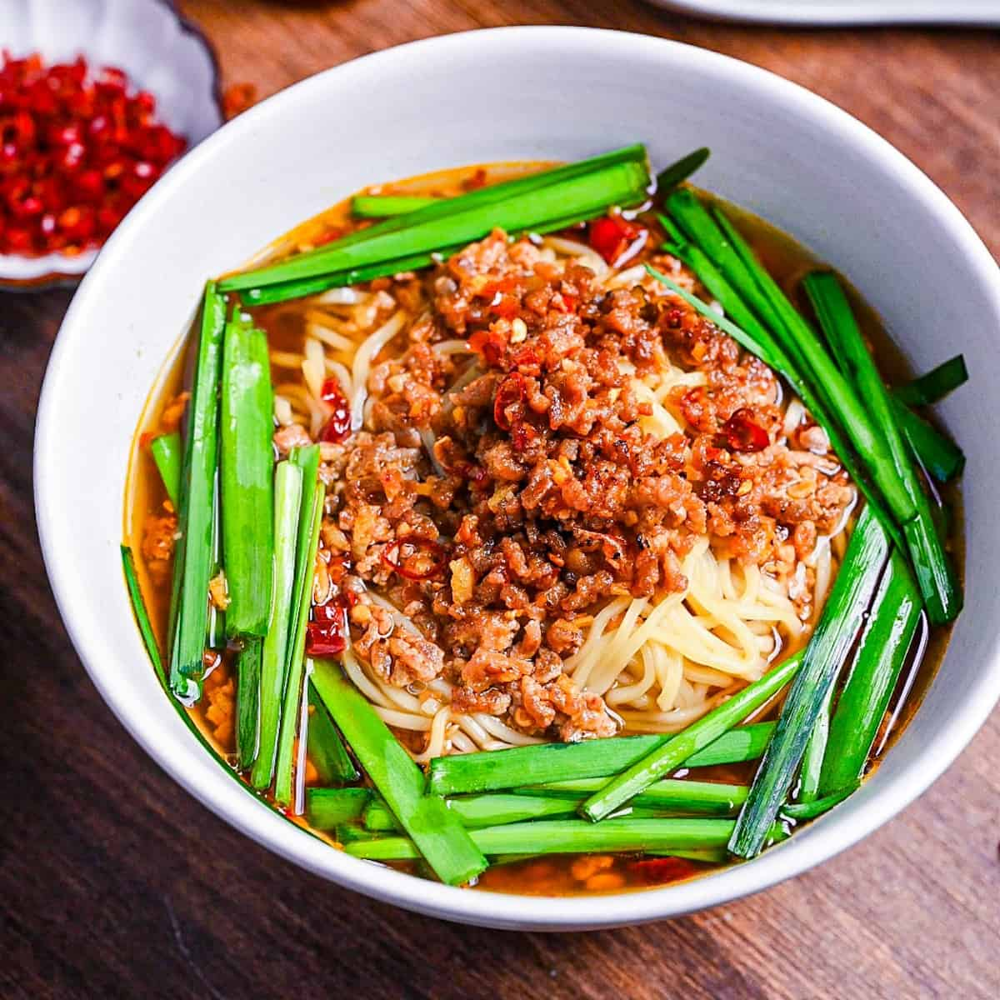

Taiwan Ramen
「台湾ラーメン — Energy, spices and eastern tradition in a single bowl.'
Taiwan Ramen is a Japanese creation inspired by Taiwanese cuisine. Spicy and bold, this ramen combines ground meat, garlic and chiles, resulting in a powerful and flavorful bowl.
Ingredients
- Chicken or pork-based broth
- Ground meat sautéed with garlic and chili
- Medium noodles
- Scallion and bean sprouts
Flavor
Spicy, umami and slightly sweet.
Scent
Intense with notes of garlic and chili.
Texture
Light but powerful, with just the right spice.